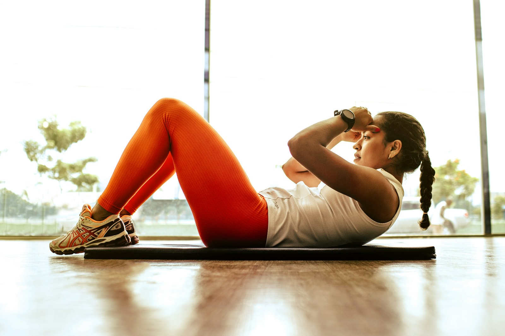
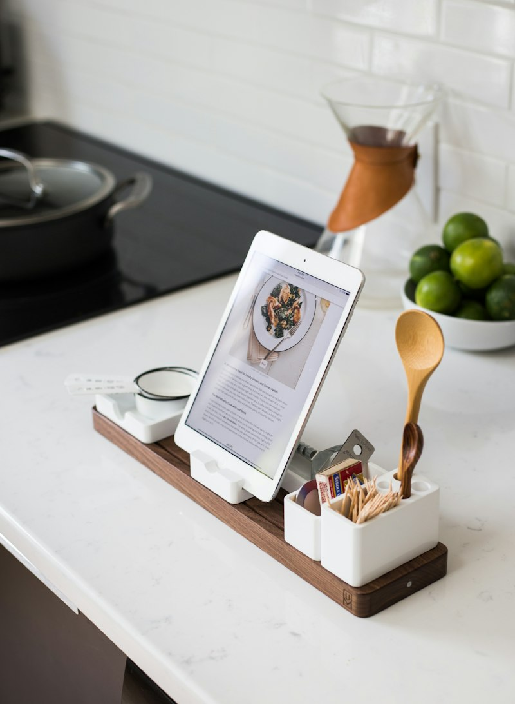

Nutriční koučink & osobní trénink
Cesta k udržitelnému
zdraví a formě
Jsem Barbora, vaše průvodkyně světem moderní výživy a pohybu. Pomáhám lidem dosáhnout jejich cílů bez drastických diet, s důrazem na dlouhodobé zdraví a radost ze života.
Kdo jsem
O mně
Jsem Ing. Barbora Karásková, nutriční koučka a osobní trenérka. Ve své praxi spojuji odborné vzdělání v oblasti výživy a technologie potravin s praktickými zkušenostmi z tréninku, abych klientům pomohla najít rovnováhu mezi jídlem, pohybem a každodenním životem.
Nevěřím na drastické diety ani univerzální recepty. Každou spolupráci stavím na diagnostice, datech a individuálním přístupu – ať už se potkáváme osobně v Brně, nebo spolupracujeme online odkudkoli.
Jak vám mohu pomoci
Služby na míru vašim cílům
Vyberte si oblast, která vás zajímá nejvíce – nutriční koučink, osobní trénink, nebo online spolupráci odkudkoli.

Nutriční koučink & diagnostika
Diagnostika složení těla probíhá na profesionálních vahách – zjistíte, kolik máte svalové hmoty, tuku a jaká je vaše metabolická úroveň. Na to navazuje konzultace, při které společně rozebereme vaše stravovací návyky, zdravotní stav a denní režim.
Nečekejte striktní jídelníček na gramy. Dostanete strategii, díky které se naučíte o jídle přemýšlet tak, aby vás neomezovalo, ale podporovalo na cestě za vysněnou postavou.

Osobní trénink
Od března 2026 otevírám své lekce v novém luxusním fitku Body Care v rezidenci Pekárenský dvůr. Zaměřuji se na funkční trénink, který tělo nejen vytvaruje, ale především zbaví bolestí a nefunkčních pohybových vzorců.
Specializuji se na SM systém – cvičení spirální stabilizace páteře vhodné pro sedavé zaměstnání i problémy se zády – a na TRX, závěsný systém pro rozvoj síly celého těla.
Online spolupráce
Ať jste kdekoli, můžeme na vašem zdraví a formě pracovat společně i na dálku. Spolupráce probíhá formou pravidelných videohovorů a průběžné online analýzy vašeho pokroku.

Pro čtenáře
Doba zrychlená: Klíč ke stravě
Praktický průvodce stravováním pro uspěchanou dobu – jak nakupovat, vařit a jíst zdravě i s nabitým kalendářem, bez zbytečných výčitek a přísných diet.
Máte k ebooku dotaz, nebo si ho chcete rovnou objednat? Napište mi.
Mám zájem o ebookSpojme se
Pojďme se spojit
Máte dotaz k ebooku nebo chcete začít spolupráci? Napište mi přímo zde nebo na můj email.
Rezidence Pekárenský dvůr · fitness centrum Body Care